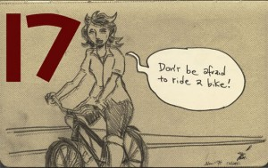
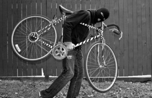

Fear is a gift others give to you. You’re about do something and a voice at your side tells you that “you should not do that as it is too dangerous”. Out of politeness you listen you pay attention and weigh the words in your mind. You wonder what is the danger and you look at yourself in the mirror and think this is the person in danger.
Is he a bomb disposal expert? Does it he clear minefields for a living is he a news correspondence working in a war zone. Is he learning to do the Hopi snake dance. As is true of almost everyone my answer is. None of these. I am just a slightly overweight person pedaling a bicycle
When I was a child I was told that the most dangerous job was that of a deep sea fisherman. This I accepted without ever having met one or been on a fishing vessel. thinking about it perhaps worse still would be. A mine clearance expert who tap-danced as a hobby. Yes, that sounded weird and very dangerous. But remember that there are many different people in the world all trying to get on.
With all I know I am a cyclist; my great fear is high-speed horseflies able to fly faster than I can pedal. As far as I know there are no statistics for the number of cyclists who have been dinner for cannibals or swallowed whole while on their bike by cyclist hungry anacondas. So what fear can a cyclist reasonably have?
That is why fear is a gift. it is not yours it is a present from another who tells you that you will certainly be attacked and robbed. I remember the first time I arrived in Bogota being told in all seriousness not to put a foot outside my hotel door as if I did “they will steal the shoe”.
But please note that despite this danger within three years I married the most beautiful woman in the world who stole my still beating heart.


When the cyclist does go in harm’s way it is done of their own accord it is they that decide that they can cycle faster than the foaming dog at their heels and it is the cyclist who starts to shout as the children surround his bike and touch all his things he will remember too late that children every were do the same thing. Mainly these are silly and not dangerous. You can go swimming in the Amazon even knowing that there are 35 different strains of piranhas. If the locals go everyday so can you.
So what fears are my own. Almost all of the fears I’ve collected after the event. For example I learnt in the Middle East the certain knowledge that my forward motion can be stopped immediately by the sound of a rifle bolt being cocked I was not afraid at the time but I certainly found real fear thinking about it afterwards.
I also managed to do some really stupid things on boats in the English Channel which again in retrospect makes me scared of my own stupidity. I crash and burn with fear and shame at the memory of being in Panama when a large hand was placed in my shirt pocket. I grabbed hold of the hand and much to the surprise of the owner I bit it as hard as I could. the owner then fled up a dark alley. I followed and caught the thief. Then I stood ready in the classic boxing stance I then looked again at my huge dark opponent turned around and ran back out into the into the sunshine.


Certainly it is wonderful to have nice things but respect the community your travelling through and keep them hidden.
You are not allowed fear in your mind. If it comes to visit get it to sit down and listen to what is has to say but then get on your bike and pedal and leave the fear behind.